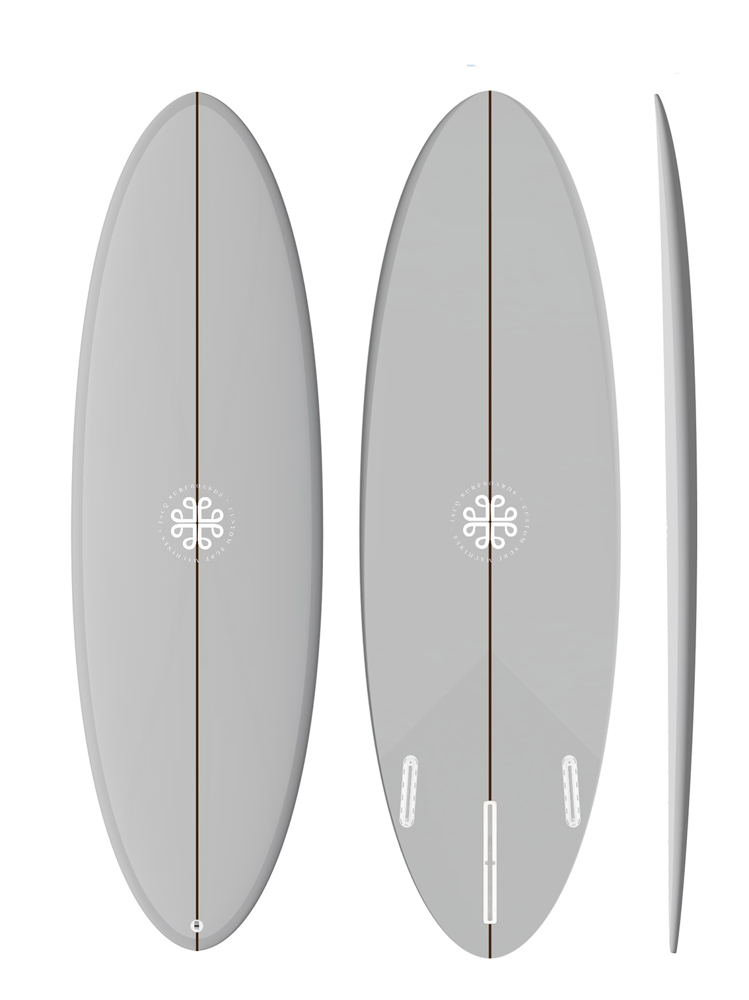

La Marguerite
Type: Mini Egg
Range: 5'6 - 6'2
Un outline simplissime pour un coup de coeur instantané. Ce petit egg se destine à des vagues de +70 cm. Il est extrêmement maniable et prédictible dans la trajectoire.
La Marguerite sera aussi un bon choix pour le surfeur intermédiaire souhaitant passer sur des volumes réduits et commencer à manœuvrer. Montage en 2+1 ou single.
Bottom: single to double concave
Horaires d'ouverture :
Du mardi au samedi
de 9h à 12h et de 14h à 19h.
L'Atelier de la Glisse
pour les réparations.
28 rue Léon Lempereur
35400, Saint Malo
jacq.surfboards@gmail.com

Handshaped Website
©Jacq Surfboards V4 - 2024
Photos @enguerran_urban